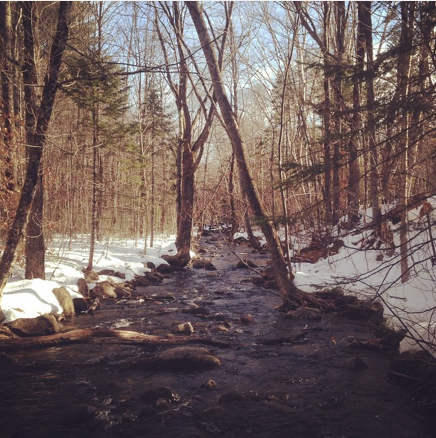
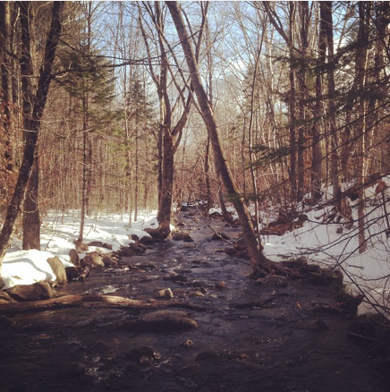

My full name is Benjahmin Katahdin Leverett. I was born and raised in North Yarmouth, Maine which is a small town about 10 minutes north of Portland. I am the middle child of three boys. My older brother's name is Elijah and my younger brother's name is Ezra. My mother's name is Patty and my father's name is Stephen. I am currently pursuing an undergraduate degree in Finance at the University of Maine in Orono, Maine and hope to one day become a financial planner. My main interests include photography and sports and I am an avid Newcastle United supporter.
Homepage | Favorite Sports Teams | Resume | Newcastle's Best Goalscorer's

 
